Restauration et amélioration d'image
Amélioration d'histogramme
Ce premier projet consiste à modifier l'histogramme d'une image en noir et blanc de sorte à améliorer le contraste.
 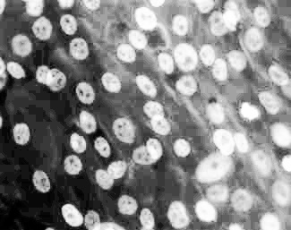
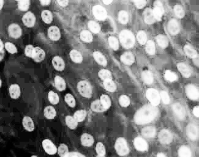Il marche aussi pour passer une image couleur en noir blanc
 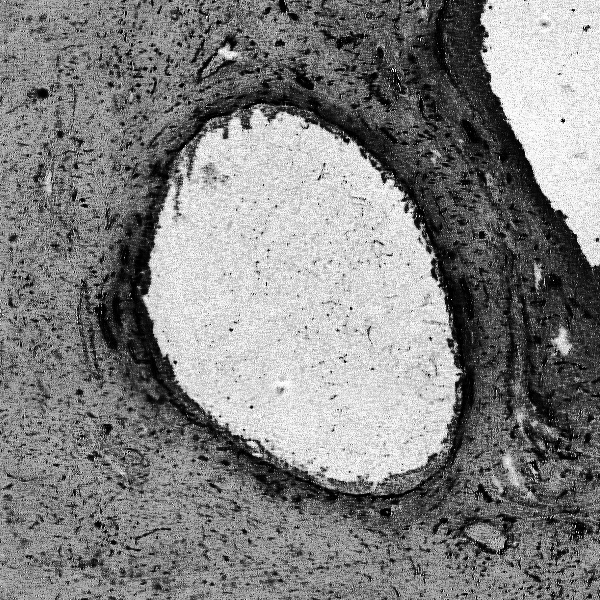
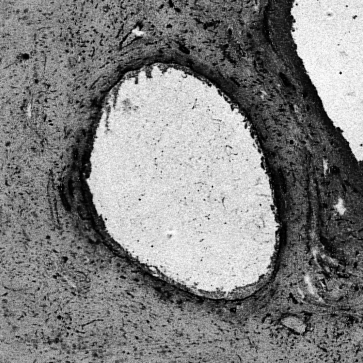Le code est trouvable ici, mais est remplacable par la fonction exposure.equalise_hist() du module skimage
Transformation de Fourier en 2 dimension
Ce projet utilise les transformer de Fourier pour l'analyse d'image. On choisit en premier temps notre image:

On applique les transformer de Fourier à cette image et nous obtenons les images en Amplitude et en Phase esuivant :
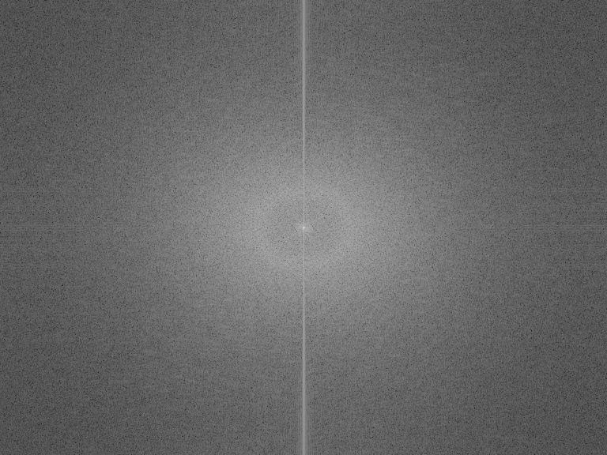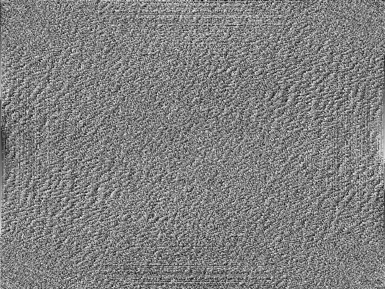Si maintenant on applique la transformer de Fourier inverse on obtient pour les deux :

Sur cette image les deux résultat sont inintéressants cependant l'inverse de la transformer de Fourier de la phase peux donner des résultats intéressant comme la détection de contours, en voici un exemple:
 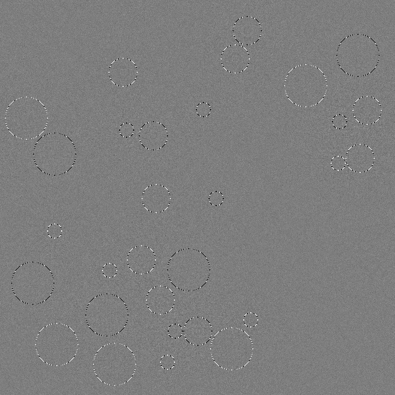
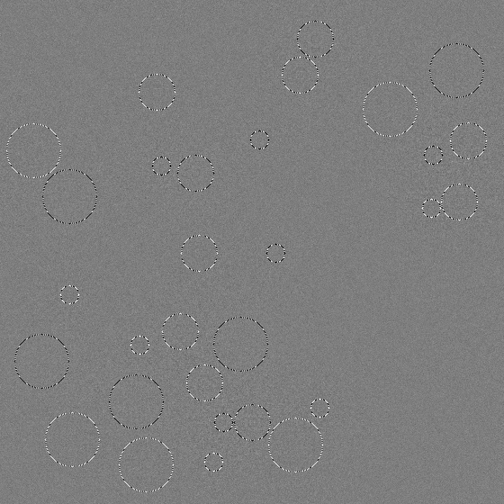Le code est trouvable ici
Utilisation des transformées de Fourier
Nous allons ici utiliser les codes du projet précédent pour faire une filtre passe-bas et passe haut sur l'image de cornée utilisé précedement
Commençons par le filte passe-bas (qui nous fait perdre les petit détails):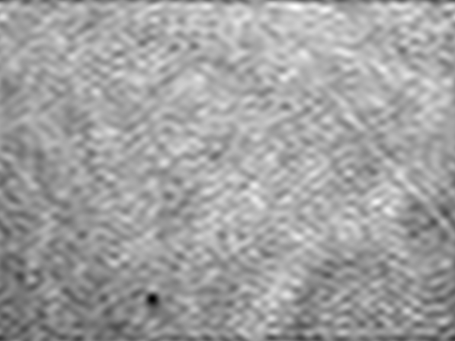Maitenant le filte passe-bas (qui nous fait perdre les grands détails):

Pour biens voir l'intérêts de ceci nous allons le faire avec une image différente:
filtre passe-bas: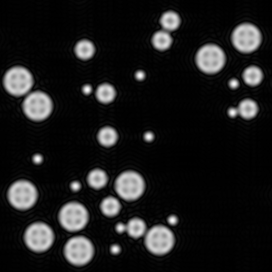filtre passe-haut:
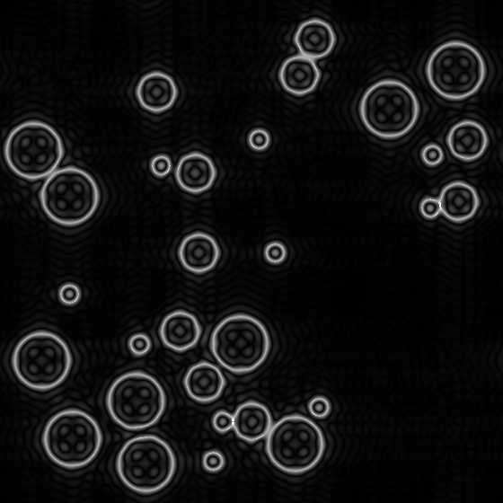Ici nous avons pour l'instant un filtre rectangulaire binaire si nous utilisons à la place une guaussienne nous obtenons de meilleur résultat:
Utilisation des transformées de Fourier